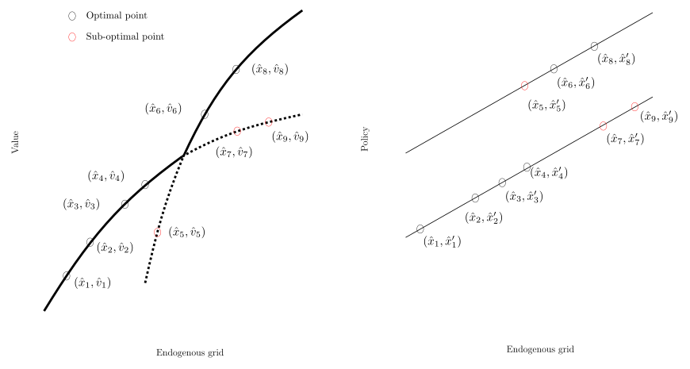

How FUES Works¶
The problem in one picture¶
In discrete-continuous problems, the Euler equation generates a value correspondence rather than the optimal solution.
After EGM inverts the Euler equation, some candidate points lie on the upper envelope and others satisfy only local first-order conditions. FUES recovers the upper envelope by scanning the ordered endogenous grid from left to right.

Why EGM produces sub-optimal points¶
Setup
Consider Bellman equation with a discrete choice \(d \in \{0, 1\}\) and a continuous choice \(c\):
The continuation value \(V_{t+1}^d\) — even holding \(d\) fixed — depends on all future discrete choice sequences. Each sequence yields a concave value function. The true \(V_t\) is the upper envelope of these concave functions.
When we invert the Euler equation via EGM, we obtain raw correspondence points \((\hat{x}_i, \hat{v}_i)\) together with an associated post-decision asset / next-period asset choice \(\hat{x}'_i\). Economically, each smooth branch corresponds to a continuation value associated with a particular future sequence of discrete choices. A jump across branches causes secondary kinks, coinciding with a switch in discrete choices at some point/stochastic state in the future. The true decision value is the supremum of these concave branch-specific values.
The key insight
Along a single branch, the continuation policy is smooth and the value correspondence is concave. A discontinuous policy jump can therefore only lie on the upper envelope if the associated branch-specific value overtakes the upper envelope from below. Thus, an optimal jump must imply a left turn on the value correspondence. Geometrically, that means:
- a jump plus a concave right turn signals a sub-optimal point
- a jump plus a convex left turn signals that the scan has passed a crossing point between branches on the upper envelope and the point should be retained
The basic scan¶
Order the EGM outputs by the endogenous grid \(\hat{x}_i\). FUES then walks through the sorted candidate points and compares the secant slopes around a local triple:
These secants tell us whether moving from \((\hat{x}_{i-1},\hat{v}_{i-1})\) to \((\hat{x}_i,\hat{v}_i)\) and then to \((\hat{x}_{i+1},\hat{v}_{i+1})\) creates a convex left turn or a concave right turn.
If \(g_{i+1} < g_i\) (a concave right turn) and the continuation policy jumps by more than \(\bar{M}\):
- the candidate \((\hat{x}_{i+1},\hat{v}_{i+1})\) cannot belong to the upper envelope
- the point is associated with an inferior branch
- remove it from the endogenous grid, value correspondence, and continuation-policy arrays
If \(g_{i+1} > g_i\) (a convex left turn) at a policy jump, the point is tentatively retained as a post-crossing candidate. In finite grids, however, a left turn is not by itself enough to classify the point with certainty; this is why FUES adds forward and backward scans near crossings.
Jump detection¶
What is a jump?
A "jump" occurs when the continuation-policy gradient between adjacent points exceeds a threshold \(\bar{M}\):
Within a single branch, the continuation object is smooth and its slope is bounded. A large difference quotient therefore signals that adjacent endogenous points are associated with different future choice sequences.
A jump is detected when adjacent candidate points differ too much in the post-decision policy to be explained by movement along a single conditional policy branch. In the paper, \(\bar{M}\) is introduced as a user-chosen jump threshold. The appendix also derives a grid-specific endogenous threshold \(\bar{M}_i^*\) from bounds on the conditional policy derivative.
Accuracy and choice of \(\bar{M}\)
The slope of the policy at a jump is infinite, while the slope of the policy function along a branch is bounded above in economic problems. For example, in a consumption-savings problem, the consumption function has a maximum slope of 1 -- the maximum marginal propensity to consume. So, if we take a grid fine enough and set \(\bar{M}\) equal to the maximum MPC, then we can detect all jumps and remove all sub-optimal points by removing jumps that do not make a left turn.
The algorithm¶
FUES (basic scan)
- Compute the raw EGM objects \(\hat{\mathbb{X}}_t\), \(\hat{\mathbb{V}}_t\), and \(\hat{\mathbb{X}}'_t\).
- Set the jump-detection threshold \(\bar{M}\).
- Sort all candidate points by the endogenous grid \(\hat{\mathbb{X}}_t\).
- Starting from \(i=2\), compute the secants \(g_i\) and \(g_{i+1}\).
- Compute the policy difference quotient \(\left|\frac{\hat{x}'_{i+1}-\hat{x}'_{i}}{\hat{x}_{i+1}-\hat{x}_i}\right|\).
- If the policy quotient exceeds \(\bar{M}\) and \(g_{i+1}<g_i\), delete point \(i+1\).
- Otherwise retain the point, advance the scan, and continue until the grid is exhausted.
Forward and backward scans¶
These scans are not cosmetic refinements; they handle the two main finite-grid failure modes of the basic three-point rule near crossings.
The simple left-turn/right-turn rule is the core of FUES, but crossings can occur very close to sampled grid points. In such cases, a purely local three-point test may misclassify the first point after a crossing or fail to detect that a previously retained point has become dominated.
FUES therefore uses a small look-ahead / look-back window (LB, default 4):
- Forward scan: before deleting a point after a right turn, search to the right for a point that appears to lie on the same branch as the last retained point. If the tentative point dominates the secant joining those two same-branch points, it is retained as a post-crossing optimal point.
- Backward scan: after a left turn, search to the left for a point that appears to lie on the same branch as the new candidate. If the previously retained point is dominated by that secant, it is reclassified as sub-optimal.
- Crossing interpolation: once the relevant left and right segments have been identified, FUES can attach an approximate crossing point to the refined grid.
These refinements are local, inexpensive, and mainly matter near closely spaced crossings; they do not change the basic economic logic of the method.
References¶
- Dobrescu, L.I. and Shanker, A. (2022). "A fast upper envelope scan method for discrete-continuous dynamic programming." SSRN Working Paper No. 4181302.
- Carroll, C.D. (2006). "The method of endogenous gridpoints for solving dynamic stochastic optimization problems." Economics Letters, 91(3).
- Iskhakov, F. et al. (2017). "The endogenous grid method for discrete-continuous dynamic choice models with (or without) taste shocks." Quantitative Economics, 8(2).
- Druedahl, J. (2021). "A guide on solving non-convex consumption-saving models." Computational Economics, 58.
- Fella, G. (2014). "A generalized endogenous grid method for non-smooth and non-concave problems." Review of Economic Dynamics, 17(2).
- Druedahl, J. and Jørgensen, T.H. (2017). "A general endogenous grid method for multi-dimensional models with non-convexities and constraints." Journal of Economic Dynamics and Control, 74, 87–107.